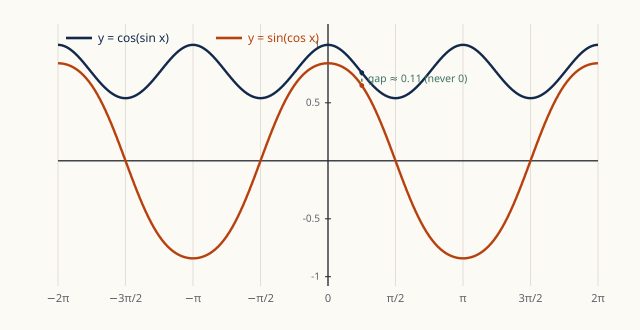

Topic 5 · Coordinate Geometry · Trigonometry New chapter
Geometry and Trigonometry
Lines and circles in the coordinate plane, the geometry of triangles, radians, identities, trigonometric equations — and a first expedition into three dimensions. The topic students avoid, and therefore the one to master.
§G.1Introduction
As a tutor, I see students spend more time on the Geometry question than on any other — when I sat my own admissions test, the geometry problem took me longer than the rest of the paper combined. The lesson is not to avoid Geometry but to drill it until it is no longer hard. The good news: the TMUA's geometry is entirely coordinate geometry — lines, circles and triangles living in the \((x,y)\) plane — and almost every question reduces to a small number of formulas combined with the discriminant ideas from the Algebra topic. We develop the toolkit, then trigonometry, then problems.
§G.2Lines in the plane
For \(A(x_1,y_1)\) and \(B(x_2,y_2)\):
- Distance: \(|AB|=\sqrt{(x_2-x_1)^2+(y_2-y_1)^2}\) — Pythagoras in disguise.
- Midpoint: \(M=\left(\frac{x_1+x_2}2,\ \frac{y_1+y_2}2\right)\).
- Gradient: \(m=\dfrac{y_2-y_1}{x_2-x_1}\) — the "rise over run", and (as we saw in Functions) the tangent of the angle the line makes with the \(x\)-axis.
- Gradient–intercept: \(y=mx+c\), where \(c\) is the \(y\)-intercept.
- Point–gradient: \(y-y_1=m(x-x_1)\) — the most useful form in practice: you almost always know a point and a gradient (e.g. tangents and normals).
- General form: \(ax+by+c=0\), which also covers vertical lines \(x=k\), where the gradient is undefined.
Lines with gradients \(m_1,m_2\) are parallel iff \(m_1=m_2\), and perpendicular iff \(m_1m_2=-1\). The second fact powered our normals in the Functions topic; to see why it is true, rotate the "rise over run" triangle by \(90^\circ\): the rise becomes the run and the run becomes minus the rise, so the new gradient is \(-\frac1m\).
One more tool, less standard but devastatingly efficient in multiple-choice settings:
The distance from the point \(P(x_0,y_0)\) to the line \(ax+by+c=0\) is \[d=\frac{|ax_0+by_0+c|}{\sqrt{a^2+b^2}}.\]
Example. How far is the origin from the line \(3x+4y-10=0\)? \(d=\frac{|{-10}|}{\sqrt{9+16}}=\frac{10}5=2.\) Compare this one-line computation with the alternative: find the perpendicular through the origin, intersect, apply the distance formula. In a 75-second-per-question exam, the formula wins.
§G.3Circles
The circle with centre \((a,b)\) and radius \(r\) is the set of points at distance \(r\) from the centre: \[(x-a)^2+(y-b)^2=r^2.\] A circle often arrives in expanded form \(x^2+y^2+2gx+2fy+c=0\); complete the square to read off centre \((-g,-f)\) and radius \(r=\sqrt{g^2+f^2-c}\) (a genuine circle requires \(g^2+f^2-c>0\)).
Example. \(x^2+y^2-6x+4y-3=0\) becomes \((x-3)^2+(y+2)^2=16\): centre \((3,-2)\), radius 4.
- Substitute the line \(y=mx+c\) into the circle's equation to obtain a quadratic in \(x\).
- Compute the discriminant \(\Delta\).
- \(\Delta>0\): the line is a chord (two intersections). \(\Delta=0\): the line is tangent (one touch). \(\Delta<0\): the line misses the circle.
Alternative for tangency: the line is tangent iff its distance from the centre equals the radius — often faster with the point-to-line formula.
Three circle facts that the TMUA assumes from school geometry, and which convert many circle problems into right-angle problems:
- A radius drawn to the point of tangency is perpendicular to the tangent. (So the normal to a circle always passes through the centre.)
- The angle in a semicircle is a right angle: if \(AB\) is a diameter and \(P\) is on the circle, \(\angle APB=90^\circ\).
- The perpendicular from the centre to a chord bisects the chord — half-chord, radius and centre-distance form a right triangle: \(\left(\frac{\text{chord}}2\right)^2+d^2=r^2\).
Example. Find the length of the chord cut from the line \(3x+4y-10=0\) by the circle \(x^2+y^2=9\). The centre is the origin and we computed \(d=2\) above; with \(r=3\), the half-chord is \(\sqrt{9-4}=\sqrt5\), so the chord has length \(2\sqrt5\). No intersection points were ever found — fact 3 did all the work.
§G.4Triangles
Radians first. A full turn is \(2\pi\) radians, so \(180^\circ=\pi\); convert by multiplying by \(\frac\pi{180}\) or its reciprocal. Radians are not a stylistic preference — they are the units in which calculus works: \((\sin x)'=\cos x\) and the small-angle approximations \(\sin x\approx x\), \(\cos x\approx1-\frac{x^2}2\), \(\tan x\approx x\) are false in degrees.
In a circle of radius \(r\), an angle of \(\theta\) radians at the centre subtends an arc of length \(r\theta\) and a sector of area \(\frac12r^2\theta\). (Sanity check with the full turn \(\theta=2\pi\): circumference \(2\pi r\), area \(\pi r^2\).)
In a triangle with angles \(A,B,C\) opposite sides \(a,b,c\):
- Sine rule: \(\dfrac a{\sin A}=\dfrac b{\sin B}=\dfrac c{\sin C}=2R\), where \(R\) is the circumradius. Use it when you have an angle–opposite-side pair.
- Cosine rule: \(a^2=b^2+c^2-2bc\cos A\). Use it with two sides and the included angle, or three sides and no angle. With \(A=90^\circ\) it degenerates into Pythagoras.
- Area: \(\text{Area}=\frac12ab\sin C\) — half the product of two sides times the sine of the included angle; with \(C=90^\circ\) this is the familiar \(\frac12\,\text{base}\times\text{height}\).
The sine rule can betray you: from \(\sin B=k\) there are two candidate angles, \(B\) and \(180^\circ-B\), and both may produce a valid triangle. Whenever you extract an angle from its sine, check whether the obtuse alternative also satisfies the angle sum. (Extracting from a cosine is safe — \(\cos\) determines an angle of a triangle uniquely.)
§G.5Trigonometric functions, identities and equations
The graphs of \(\sin\), \(\cos\) (period \(2\pi\)) and \(\tan\) (period \(\pi\), vertical asymptotes at \(\frac\pi2+k\pi\)) were sketched in the Functions topic; everything there about transformations applies — \(\sin(2x)\) squashes, \(2\sin x\) stretches, \(\cos x=\sin\!\left(x+\frac\pi2\right)\) is a translation. The exact values to know cold:
| \(\theta\) | \(0\) | \(\frac\pi6\) | \(\frac\pi4\) | \(\frac\pi3\) | \(\frac\pi2\) |
|---|---|---|---|---|---|
| \(\sin\theta\) | \(0\) | \(\frac12\) | \(\frac{\sqrt2}2\) | \(\frac{\sqrt3}2\) | \(1\) |
| \(\cos\theta\) | \(1\) | \(\frac{\sqrt3}2\) | \(\frac{\sqrt2}2\) | \(\frac12\) | \(0\) |
| \(\tan\theta\) | \(0\) | \(\frac{1}{\sqrt3}\) | \(1\) | \(\sqrt3\) | — |
- \(\sin^2\theta+\cos^2\theta=1\) — Pythagoras on the unit circle. Dividing by \(\cos^2\theta\) gives \(\tan^2\theta+1=\sec^2\theta\).
- \(\tan\theta=\dfrac{\sin\theta}{\cos\theta}\).
For any angles \(a\) and \(b\): \[\sin(a\pm b)=\sin a\cos b\pm\cos a\sin b,\qquad \cos(a\pm b)=\cos a\cos b\mp\sin a\sin b,\] \[\tan(a\pm b)=\frac{\tan a\pm\tan b}{1\mp\tan a\tan b}.\] Watch the signs: cosine's are flipped. These four lines generate the rest of trigonometry. Setting \(b=a\) gives the double-angle formulae: \[\sin2\theta=2\sin\theta\cos\theta,\qquad \cos2\theta=\cos^2\theta-\sin^2\theta=2\cos^2\theta-1=1-2\sin^2\theta,\] where the three faces of \(\cos2\theta\) (obtained via \(\sin^2+\cos^2=1\)) are interchangeable; pick the one that removes the function you don't want. Read backwards, the \(\cos2\theta\) formulae become the power-reduction identities \(\cos^2\theta=\frac{1+\cos2\theta}2\) and \(\sin^2\theta=\frac{1-\cos2\theta}2\) — the standard way to integrate \(\sin^2\) and \(\cos^2\) in the Integration topic.
Adding and subtracting the addition formulae in pairs, then substituting \(a=\frac{A+B}2\), \(b=\frac{A-B}2\): \[\sin A+\sin B=2\sin\frac{A+B}2\cos\frac{A-B}2,\qquad \sin A-\sin B=2\cos\frac{A+B}2\sin\frac{A-B}2,\] \[\cos A+\cos B=2\cos\frac{A+B}2\cos\frac{A-B}2,\qquad \cos A-\cos B=-2\sin\frac{A+B}2\sin\frac{A-B}2.\] Their power: they turn sums (hard to set to zero) into products (trivial to set to zero — factor and solve each factor). They are exactly what cracks MAT 1994's equation \(\sin5\theta+\sin3\theta+\sin\theta=0\) in the Algebra problems: pair the outer terms to get \(2\sin3\theta\cos2\theta+\sin3\theta=\sin3\theta\,(2\cos2\theta+1)=0\).
Any combination \(a\sin x+b\cos x\) is a single shifted sine wave: \[a\sin x+b\cos x=R\sin(x+\alpha),\qquad R=\sqrt{a^2+b^2},\quad \tan\alpha=\frac ba\] (expand \(R\sin(x+\alpha)\) with the addition formula and match coefficients: \(R\cos\alpha=a\), \(R\sin\alpha=b\)). Two immediate payoffs: the maximum and minimum of \(a\sin x+b\cos x\) are \(\pm R\) — no calculus needed — and the equation \(a\sin x+b\cos x=c\) has solutions iff \(|c|\le R\). For example, \(\sin x+\sqrt3\cos x=2\sin\!\left(x+\frac\pi3\right)\), so its greatest value is 2, attained when \(x+\frac\pi3=\frac\pi2\).
\(\sin(-\theta)=-\sin\theta\) (odd); \(\cos(-\theta)=\cos\theta\) (even); \(\sin(\pi-\theta)=\sin\theta\); \(\cos(\pi-\theta)=-\cos\theta\); \(\sin\!\left(\frac\pi2-\theta\right)=\cos\theta\). These six lines replace the "CAST diagram" entirely — and they are exactly the reflections and translations of §5.11 acting on the sine wave.
- Use identities to rewrite the equation in a single trigonometric function — e.g. replace \(\cos2\theta\) by \(1-2\sin^2\theta\) if the rest is in \(\sin\theta\).
- Substitute \(t=\sin\theta\) (or \(\cos\theta\), \(\tan\theta\)): the equation becomes polynomial. Solve it; discard roots outside \([-1,1]\) for sine and cosine.
- For each valid \(t\), find all \(\theta\) in the required interval using the graph or the symmetries above: \(\sin\theta=k\) has solutions \(\theta\) and \(\pi-\theta\) plus multiples of \(2\pi\); \(\cos\theta=k\) has \(\pm\theta\) plus multiples of \(2\pi\); \(\tan\theta=k\) has \(\theta\) plus multiples of \(\pi\).
- Count carefully — TMUA questions often ask only for the number of solutions, and the marks are lost at the endpoints of the interval.
Example. How many solutions does \(2\cos^2\theta+3\sin\theta=3\) have in \([0,2\pi]\)? Replace \(\cos^2\theta=1-\sin^2\theta\): \(2-2\sin^2\theta+3\sin\theta=3\), i.e. \(2\sin^2\theta-3\sin\theta+1=0\), so \((2\sin\theta-1)(\sin\theta-1)=0\). Then \(\sin\theta=\frac12\) gives \(\theta=\frac\pi6,\frac{5\pi}6\); \(\sin\theta=1\) gives \(\theta=\frac\pi2\). Three solutions. (Compare Question 7 in the Algebra problems — the same machinery.)
§G.6Into three dimensions
The TMUA stays in the plane, but STEP and interview questions do not — and the third dimension is where the infamous "Geometry question" usually lives. The encouraging secret: almost nothing new is needed. Every formula below is the two-dimensional one with a third coordinate bolted on, and every 3D angle problem is solved by finding the right plane inside the solid and doing 2D trigonometry there.
For \(A(x_1,y_1,z_1)\) and \(B(x_2,y_2,z_2)\):
- Distance: \(|AB|=\sqrt{(x_2-x_1)^2+(y_2-y_1)^2+(z_2-z_1)^2}\) — Pythagoras applied twice: first across the floor, then up the wall.
- Midpoint: average each coordinate.
- Sphere with centre \((a,b,c)\) and radius \(r\): \((x-a)^2+(y-b)^2+(z-c)^2=r^2\). Complete the square to read off centre and radius, exactly as for circles.
A vector \(\mathbf a=\begin{pmatrix}a_1\\a_2\\a_3\end{pmatrix}\) encodes a displacement; its magnitude is \(|\mathbf a|=\sqrt{a_1^2+a_2^2+a_3^2}\). The scalar (dot) product is \[\mathbf a\cdot\mathbf b=a_1b_1+a_2b_2+a_3b_3=|\mathbf a||\mathbf b|\cos\theta,\] where \(\theta\) is the angle between the vectors. The two expressions together make the scalar product the angle-measuring machine of 3D geometry: \[\cos\theta=\frac{\mathbf a\cdot\mathbf b}{|\mathbf a||\mathbf b|},\] and in particular \(\mathbf a\perp\mathbf b\iff\mathbf a\cdot\mathbf b=0\) — the 3D replacement for "gradients multiply to \(-1\)", which has no direct analogue off the plane.
- A line through point \(\mathbf a\) with direction \(\mathbf d\): \(\mathbf r=\mathbf a+\lambda\mathbf d\), \(\lambda\in\mathbb R\). Two lines in space may intersect, be parallel — or be skew: non-parallel yet never meeting, a possibility that simply doesn't exist in the plane.
- A plane with normal vector \(\mathbf n\) through the point \(\mathbf a\): \(\mathbf n\cdot(\mathbf r-\mathbf a)=0\), i.e. \(n_1x+n_2y+n_3z=k\). The coefficients of \(x,y,z\) are the normal — the 3D sibling of reading the gradient off \(ax+by+c=0\).
- The angle between a line and a plane: find the angle between the line's direction and the normal, then subtract from \(90^\circ\).
- Identify the angle asked for, and the triangle that contains it: between two lines, take the triangle they span; between a line and a plane, drop a perpendicular from a point of the line onto the plane and join up the right triangle.
- Compute the three relevant lengths with the 3D distance formula (diagonals of boxes fall to "Pythagoras twice").
- Finish with plane trigonometry — usually \(\tan\theta=\frac{\text{opposite}}{\text{adjacent}}\) in the right triangle you built, or the cosine rule if no right angle offered itself.
- Alternatively, coordinatise: place the solid on axes, write the two directions as vectors, and let the scalar product compute the cosine. When in doubt, coordinates beat ingenuity.
Example. Find the angle between the space diagonal of a cube and one of its faces. Take the unit cube with a vertex at the origin; the diagonal runs from \((0,0,0)\) to \((1,1,1)\), and its shadow on the floor runs to \((1,1,0)\). The right triangle has horizontal leg \(\sqrt2\) (the face diagonal) and vertical leg \(1\), so \[\tan\theta=\frac1{\sqrt2},\qquad\theta=\arctan\frac1{\sqrt2}\approx35.3^\circ.\] Equivalently by vectors: \(\cos\) of the angle between \((1,1,1)\) and \((1,1,0)\) is \(\frac{2}{\sqrt3\sqrt2}=\sqrt{\tfrac23}\) — the same angle.
Prism/cylinder: \(V=\text{base area}\times\text{height}\). Pyramid/cone: \(V=\frac13\times\text{base area}\times\text{height}\) — the \(\frac13\) we derived by integration in the Integration topic. Sphere: \(V=\frac43\pi r^3\), surface \(4\pi r^2\); cylinder surface \(2\pi rh\) (curved part); cone curved surface \(\pi rl\) with \(l\) the slant height. STEP optimisation questions love fixing one of these and extremising another — set up the constraint, substitute, differentiate.
§G.7Problems
The points \(A(1,2)\) and \(B(7,10)\) are the ends of a diameter of a circle. Find the equation of the circle, and determine whether the point \((7,2)\) lies inside, on, or outside it.
Show solution
The centre is the midpoint \((4,6)\); the radius is \(\frac12|AB|=\frac12\sqrt{36+64}=5\). The circle is \((x-4)^2+(y-6)^2=25\). For \((7,2)\): \((7-4)^2+(2-6)^2=9+16=25\) — the point lies on the circle. (And by the angle-in-a-semicircle theorem, \(\angle A(7,2)B=90^\circ\) — check it via gradients!)
For how many values of \(c\) is the line \(y=x+c\) tangent to the circle \(x^2+y^2-4x-2y+1=0\)?
Show solution
Complete the square: \((x-2)^2+(y-1)^2=4\), centre \((2,1)\), radius 2. The line \(x-y+c=0\) is tangent iff its distance to the centre is 2: \(\frac{|2-1+c|}{\sqrt2}=2\), so \(|c+1|=2\sqrt2\): exactly two values, \(c=-1\pm2\sqrt2\). (Geometrically obvious — one tangent on each side — but the exam wants the values too.)
Find the equation of the tangent to the circle \(x^2+y^2=25\) at the point \((3,4)\), without using any calculus.
Show solution
The radius to \((3,4)\) has gradient \(\frac43\); the tangent is perpendicular to it (circle fact 1), so its gradient is \(-\frac34\). Point–gradient form: \(y-4=-\frac34(x-3)\), i.e. \(3x+4y=25\).
A circle has centre \((3,4)\) and is tangent to both coordinate axes... is this possible? If not, find the radius of the circle through the origin with centre \((3,4)\), and the equation of its tangent at the origin.
Show solution
Tangency to both axes requires the centre to be equidistant from both, i.e. \(|3|=|4|\) — impossible. The circle through the origin has radius \(\sqrt{3^2+4^2}=5\). The radius to the origin has gradient \(\frac43\), so the tangent there is \(y=-\frac34x\).
The line \(y=2x+k\) meets the curve \(y=x^2-3x+5\) at two points which are 3 units apart (measured horizontally, i.e. their \(x\)-coordinates differ by 3). Find \(k\).
Show solution
Intersections: \(x^2-5x+(5-k)=0\). By Vieta, \(x_1+x_2=5\), \(x_1x_2=5-k\). Then \((x_1-x_2)^2=(x_1+x_2)^2-4x_1x_2=25-4(5-k)=5+4k=9\), so \(k=1\). (Vieta's relationships from the Algebra topic — no need to find the points.)
A sector of a circle has perimeter 12 and area 9. Find all possible values of its radius.
Show solution
Perimeter: \(2r+r\theta=12\); area: \(\frac12r^2\theta=9\). From the first, \(r\theta=12-2r\); substituting, \(\frac12r(12-2r)=9\), i.e. \(r^2-6r+9=0\), so \((r-3)^2=0\): \(r=3\) only (with \(\theta=2\)).
In triangle \(ABC\), \(a=7\), \(b=8\) and \(\cos C=\frac{11}{14}\)... no — let us make it harder: \(a=7\), \(b=8\), \(c=9\). Find \(\cos A\), and hence the exact area of the triangle.
Show solution
Cosine rule: \(\cos A=\frac{b^2+c^2-a^2}{2bc}=\frac{64+81-49}{144}=\frac{96}{144}=\frac23\). Then \(\sin A=\sqrt{1-\frac49}=\frac{\sqrt5}3\), and \[\text{Area}=\frac12bc\sin A=\frac12\cdot8\cdot9\cdot\frac{\sqrt5}3=12\sqrt5.\]
How many solutions does the equation \(\sin2\theta=\cos\theta\) have for \(0\le\theta\le2\pi\)?
Show solution
\(2\sin\theta\cos\theta-\cos\theta=0\), so \(\cos\theta\,(2\sin\theta-1)=0\). \(\cos\theta=0\): \(\theta=\frac\pi2,\frac{3\pi}2\). \(\sin\theta=\frac12\): \(\theta=\frac\pi6,\frac{5\pi}6\). Four solutions. The classic error is dividing by \(\cos\theta\) — which silently discards two of them. Never divide by something that can be zero; factor instead.
Find the greatest and least values of \(f(\theta)=3\sin^2\theta+8\cos\theta\) for \(\theta\in\mathbb R\).
Show solution
Write everything in cosine: \(f=3(1-\cos^2\theta)+8\cos\theta=-3t^2+8t+3\) with \(t=\cos\theta\in[-1,1]\). The parabola's vertex is at \(t=\frac43\) — outside the interval — so on \([-1,1]\) the quadratic is increasing. Greatest value at \(t=1\): \(f=8\); least at \(t=-1\): \(f=-8\). (The vertex trap: had we blindly evaluated at the vertex, we'd report a maximum the function never attains — always check the constraint \(|t|\le1\).)
A circle of radius 1 rolls inside a square of side 4, always touching at least one side. Find the area of the region of the square that the circle can never touch.
Show solution
The centre of the circle is confined to the square \([1,3]\times[1,3]\) (it must stay 1 away from every wall), and the circle covers every point within distance 1 of a possible centre. Every interior point of the big square is within distance 1 of \([1,3]^2\) — even the exact centre \((2,2)\) is reached — except near the corners: wedged into a corner, the disc leaves uncovered the region between the corner and the inscribed quarter-circle of radius 1, of area \(1-\frac\pi4\) per corner. Total unreachable area: \(4\left(1-\frac\pi4\right)=4-\pi\).
The circle \(C_1\) has equation \(x^2+y^2=r^2\) and the circle \(C_2\) has equation \((x-d)^2+y^2=R^2\), with \(d>R>r>0\) (so the circles are external to each other).
(i) Show that the circles do not intersect iff \(d>R+r\).
(ii) A common external tangent touches \(C_1\) at \(P\) and \(C_2\) at \(Q\). By considering the trapezium formed by the centres and the points of tangency, show that \(|PQ|^2=d^2-(R-r)^2\).
(iii) Find the corresponding result for a common internal tangent, and deduce that the internal tangent is always shorter.
Show hints
(i) Compare the distance \(d\) between centres with \(R+r\). (ii) The radii to \(P\) and \(Q\) are both perpendicular to the tangent, hence parallel; drop a perpendicular from the small centre to the long radius to form a right triangle with hypotenuse \(d\) and one leg \(R-r\). (iii) For the internal tangent the radii point to opposite sides, and the leg becomes \(R+r\): \(|PQ|^2=d^2-(R+r)^2<d^2-(R-r)^2\).
A student claims: "If a quadrilateral has all four sides equal, then it is a square." Find the error, state the correct relationship between the two conditions in the language of necessary and sufficient, and give the counterexample.
Show solution
A rhombus that is not a square (e.g. vertices \((0,0),(2,1),(4,0),(2,-1)\) — all sides \(\sqrt5\), no right angles) is the counterexample. Equal sides are necessary for a quadrilateral to be a square, but not sufficient. Conversely, "being a square" is sufficient but not necessary for "having equal sides". The full machinery of these terms is in the Logic and Proof topic.
A cuboid has dimensions \(3\times4\times12\). Find the length of its space diagonal, and the angle the diagonal makes with the largest face.
Show solution
Diagonal: \(\sqrt{3^2+4^2+12^2}=\sqrt{169}=13\). The largest face is the \(4\times12\) one; the diagonal's shadow on it has length \(\sqrt{4^2+12^2}=\sqrt{160}=4\sqrt{10}\), and the leg perpendicular to that face is 3, so \(\sin\theta=\frac3{13}\), giving \(\theta=\arcsin\frac3{13}\approx13.3^\circ\). (A 5–12–13 and a 3–4–5 triangle hiding in one box.)
The points \(A(1,2,2)\), \(B(3,6,2)\) and \(C(1,2,7)\) are given. Show that the triangle \(ABC\) is right-angled, and find its area.
Show solution
\(\vec{AB}=(2,4,0)\) and \(\vec{AC}=(0,0,5)\); their scalar product is \(0+0+0=0\), so the right angle is at \(A\). Area \(=\frac12|\vec{AB}||\vec{AC}|=\frac12\cdot\sqrt{20}\cdot5=5\sqrt5\).
Find the centre and radius of the sphere \(x^2+y^2+z^2-2x+4y-6z=2\), and determine whether the plane \(z=8\) meets it.
Show solution
Completing three squares: \((x-1)^2+(y+2)^2+(z-3)^2=16\): centre \((1,-2,3)\), radius 4. The plane \(z=8\) sits at distance \(|8-3|=5>4\) from the centre — it misses the sphere. (Had the distance been less than 4, the intersection would be a circle of radius \(\sqrt{16-d^2}\) — circle fact 3 of §G.3, one dimension up.)
A regular tetrahedron has all four faces equilateral with side length 1.
(i) Find its height. (ii) Find its volume. (iii) Find the angle between two faces (the dihedral angle).
Show solution
(i) The apex sits above the centroid of the base, which lies at distance \(\frac{1}{\sqrt3}\) from each base vertex (two-thirds of the median \(\frac{\sqrt3}2\)). Height: \(h=\sqrt{1-\frac13}=\sqrt{\frac23}\).
(ii) Base area \(\frac{\sqrt3}4\); volume \(\frac13\cdot\frac{\sqrt3}4\cdot\sqrt{\frac23}=\frac{1}{6\sqrt2}=\frac{\sqrt2}{12}\).
(iii) Take a base edge and the two face-midlines perpendicular to it: each has length \(\frac{\sqrt3}2\) (a face's height), and they meet the segment joining the two opposite vertices, of length 1. Cosine rule in that triangle: \(\cos\theta=\frac{\frac34+\frac34-1}{2\cdot\frac34}=\frac13\), so \(\theta=\arccos\frac13\approx70.5^\circ\).
A right circular cone has fixed slant height \(l\). Show that its volume is maximised when the semi-vertical angle \(\alpha\) satisfies \(\tan\alpha=\sqrt2\), and find the maximum volume in terms of \(l\).
Show hints
With radius \(r=l\sin\alpha\) and height \(h=l\cos\alpha\), \(V=\frac\pi3l^3\sin^2\alpha\cos\alpha\). Let \(c=\cos\alpha\): maximise \(c-c^3\) on \((0,1)\); the derivative vanishes at \(c=\frac1{\sqrt3}\), so \(\sin^2\alpha=\frac23\), \(\tan^2\alpha=2\). Maximum volume \(V=\frac\pi3l^3\cdot\frac23\cdot\frac1{\sqrt3}=\frac{2\pi l^3}{9\sqrt3}\).
How many solutions does the equation \(\cos3\theta+\cos\theta=0\) have in the interval \([0,2\pi]\)?
Show solution
Sum-to-product: \(\cos3\theta+\cos\theta=2\cos2\theta\cos\theta=0\). Then \(\cos2\theta=0\) gives \(2\theta=\frac\pi2,\frac{3\pi}2,\frac{5\pi}2,\frac{7\pi}2\), i.e. \(\theta=\frac\pi4,\frac{3\pi}4,\frac{5\pi}4,\frac{7\pi}4\); and \(\cos\theta=0\) gives \(\theta=\frac\pi2,\frac{3\pi}2\). Six solutions, with no overlap between the two factors — and, as ever, factoring rather than dividing is what kept all of them.
(i) Write \(3\sin\theta+4\cos\theta\) in the form \(R\sin(\theta+\alpha)\) with \(R>0\) and \(0<\alpha<\frac\pi2\).
(ii) Hence find the greatest and least values of \(\dfrac{20}{3\sin\theta+4\cos\theta+10}\), and the smallest positive \(\theta\) at which the greatest value occurs.
Show solution
(i) \(R=\sqrt{9+16}=5\), \(\tan\alpha=\frac43\): \(3\sin\theta+4\cos\theta=5\sin(\theta+\alpha)\) with \(\alpha=\arctan\frac43\).
(ii) The denominator ranges over \([10-5,\,10+5]=[5,15]\), so the fraction ranges over \(\left[\frac{20}{15},\frac{20}5\right]=\left[\frac43,4\right]\): greatest value 4, least \(\frac43\). The greatest value needs the denominator at its minimum, i.e. \(\sin(\theta+\alpha)=-1\): \(\theta=\frac{3\pi}2-\arctan\frac43\). The fraction structure (constant over a harmonic form) is a TMUA favourite precisely because the \(\pm R\) bound replaces all calculus.
Find the number of points in the interval \([-2\pi,2\pi]\) at which \[\cos(\sin x)=\sin(\cos x).\] Before reaching for a calculator-style search, think about periodicity and symmetry: if \(x\) is a solution, is \(k\pi\pm x\) a solution too — for \(k\) a whole number, or a whole number plus a half?
Show solution
Write \(f(x)=\cos(\sin x)-\sin(\cos x)\); we are counting the zeros of \(f\) in \([-2\pi,2\pi]\). The structure the question hints at is genuinely the fast way in — but, as we shall see, it carries a sting in the tail.
Step 1 — Periodicity. Both \(\sin\) and \(\cos\) have period \(2\pi\), so \(f(x+2\pi)=f(x)\): the picture repeats every \(2\pi\). The interval \([-2\pi,2\pi]\) is exactly two full periods, so any zero is one of a repeating family — we need only understand one period and then replicate.
Step 2 — Which of the maps \(x\mapsto k\pi\pm x\) are symmetries? A transformation helps us only if it sends a solution to a solution, i.e. leaves \(f\) unchanged. Test the candidates with \(\sin(-x)=-\sin x\), \(\cos(-x)=\cos x\), \(\sin(x+\pi)=-\sin x\), \(\cos(x+\pi)=-\cos x\):
- \(x\mapsto -x\) (the case \(k=0\), minus sign): \(\cos(\sin(-x))=\cos(-\sin x)=\cos(\sin x)\) and \(\sin(\cos(-x))=\sin(\cos x)\), so \(f(-x)=f(x)\). The function is even ✓ — a solution at \(x_0\) forces one at \(-x_0\).
- \(x\mapsto x+2\pi\) (\(k=2\), plus): unchanged by periodicity ✓.
- \(x\mapsto x+\pi\) (\(k=1\), plus): \(\cos(\sin(x+\pi))=\cos(\sin x)\) but \(\sin(\cos(x+\pi))=\sin(-\cos x)=-\sin(\cos x)\), so \(f(x+\pi)=\cos(\sin x)+\sin(\cos x)\). The shift by \(\pi\) flips the sign of the second term — it turns our equation into the different equation \(\cos(\sin x)=-\sin(\cos x)\). Not a symmetry ✗.
- \(x\mapsto \pi-x\) (\(k=1\), minus): \(\sin(\pi-x)=\sin x\), \(\cos(\pi-x)=-\cos x\) give \(f(\pi-x)=\cos(\sin x)+\sin(\cos x)\) — the same sign-flipped sibling. Not a symmetry ✗.
- \(x\mapsto \tfrac\pi2\pm x\) (the half-integer case \(k=\tfrac12\)): since \(\sin(\tfrac\pi2+x)=\cos x\) and \(\cos(\tfrac\pi2+x)=-\sin x\), this sends the equation to one in \(\cos(\cos x)\) and \(\sin(\sin x)\) — a completely different beast. Not a symmetry ✗.
So of the whole family \(x\mapsto k\pi\pm x\), only the even-integer cases survive: \(x\mapsto x+2n\pi\) and \(x\mapsto 2n\pi-x\). The equation is symmetric under reflection in any multiple of \(\pi\) and translation by any multiple of \(2\pi\) — but it is not symmetric about \(\tfrac\pi2\), and not invariant under a shift by a single \(\pi\). That asymmetry is the examinable subtlety: \(\cos(\sin x)\) on its own has period \(\pi\), yet \(\sin(\cos x)\) has period \(2\pi\) and reverses sign under \(x\mapsto x+\pi\), so the equation keeps only the coarser symmetry.
The payoff: a fundamental domain is \([0,\pi]\) (fold \([-\pi,0]\) onto it by evenness, reflect about \(\pi\) for \([\pi,2\pi]\), translate by \(2\pi\) for the rest), and \([-2\pi,2\pi]\) is four such copies. So the total count is \(4\times(\text{number of solutions in }[0,\pi])\).
Step 3 — But are there any solutions at all? All this symmetry is worthless if the solution set is empty, so we must settle existence. Use the co-function identity \(\sin\theta=\cos\!\left(\tfrac\pi2-\theta\right)\) to put both sides under a cosine: \[\cos(\sin x)=\cos\!\left(\tfrac\pi2-\cos x\right).\] Now \(\cos\) is even and strictly decreasing on \([0,\pi]\); both \(|\sin x|\in[0,1]\) and \(\tfrac\pi2-\cos x\in[\tfrac\pi2-1,\tfrac\pi2+1]\) lie inside \([0,\pi]\), where \(\cos\) is one-to-one. Equality of the two cosines therefore demands equality of arguments: \[|\sin x|=\tfrac\pi2-\cos x,\qquad\text{i.e.}\qquad |\sin x|+\cos x=\tfrac\pi2.\] But the harmonic form of §G.5 caps the left-hand side: for \(\sin x\ge0\) it is \(\sin x+\cos x=\sqrt2\,\sin\!\left(x+\tfrac\pi4\right)\le\sqrt2\), and for \(\sin x<0\) it is \(\cos x-\sin x=\sqrt2\,\cos\!\left(x+\tfrac\pi4\right)\le\sqrt2\). So \[|\sin x|+\cos x\le\sqrt2\approx1.414\;<\;\tfrac\pi2\approx1.571.\] The required equality \(|\sin x|+\cos x=\tfrac\pi2\) is therefore never reached. Equivalently \(\cos(\sin x)>\sin(\cos x)\) for every real \(x\): the two graphs never meet.

So the number of solutions in \([0,\pi]\) is \(0\), and \(4\times0=\boxed{0}\) over \([-2\pi,2\pi]\) — indeed there are none anywhere on \(\mathbb R\).
The trap. The exam reflex — find one root, then multiply by the symmetry count (\(2,4,8,\dots\)) — would here hand you a confident wrong answer. Periodicity and symmetry tell you how solutions are arranged; they never promise any exist. The whole result turns on the single comparison \(\sqrt2<\tfrac\pi2\): the most the upper curve can be pulled down (\(\cos 1\)) still clears the most the lower curve can rise (\(\sin 1\)). Always establish existence before you count.
A regular \(m\)-gon, a regular \(n\)-gon and a regular \(p\)-gon share a vertex and pairwise share edges, as shown. What is the largest possible value of \(p\)?
A 6 B 20 C 42 D 50 E 100
Show solution
Set up the angle equation. The three polygons fill the space around the shared vertex, so their interior angles sum to a full turn, \(360^\circ\). A regular \(k\)-gon has interior angle \(180-\frac{360}{k}\) degrees, so \[\left(180-\tfrac{360}{m}\right)+\left(180-\tfrac{360}{n}\right)+\left(180-\tfrac{360}{p}\right)=360.\] That is \(540-360\!\left(\frac1m+\frac1n+\frac1p\right)=360\), which rearranges to the clean Diophantine condition \[\frac1m+\frac1n+\frac1p=\frac12,\qquad m,n,p\ge3.\]
Cut the casework: bound the smallest. A blind search over \(m,n,p\) is unbounded, so order the three and take cases on the smallest, say \(s\). Being smallest, \(s\) has the largest reciprocal, so it carries at least its fair share of the total: \[\frac1s\ge\frac13\cdot\frac12=\frac16\quad\Longrightarrow\quad s\le6,\] and \(s\ge3\) since it is a polygon (and \(\frac1s<\frac12\)). So the smallest polygon has only four possible sizes, \(s\in\{3,4,5,6\}\) — that single bound is what makes the problem finite and quick.
Maximise \(p\). To make \(p\) as large as possible we make \(\frac1p\) as small as possible, i.e. we make the other two polygons as small as possible — so we want the smallest one to be a triangle, \(s=3\). Then \[\frac1n+\frac1p=\frac12-\frac13=\frac16.\] Now minimise \(\frac1p\) again by taking the smaller of these two as small as possible: we need \(\frac1n<\frac16\), so \(n\ge7\), and the smallest choice \(n=7\) leaves the most for \(p\): \[\frac1p=\frac16-\frac17=\frac1{42}\quad\Longrightarrow\quad p=42.\] Checking the other starting cases confirms this is best: \(s=4\) gives at most \(p=20\) (from \(4,5,20\)); \(s=5\) gives \(p=10\) (from \(5,5,10\)); \(s=6\) gives \(p=6\) (from \(6,6,6\)). The largest is \(p=\boxed{42}\) — answer C.
Sanity check. The triple is a triangle, a regular heptagon and a regular 42-gon: \(\frac13+\frac17+\frac1{42}=\frac{14+6+1}{42}=\frac{21}{42}=\frac12\) ✓, and the angles \(60^\circ+\frac{900}{7}^\circ+\frac{1200}{7}^\circ=360^\circ\). The recurring move — order the unknowns, bound the smallest, then push the largest by keeping the rest minimal — solves essentially every "unit-fraction" angle problem.